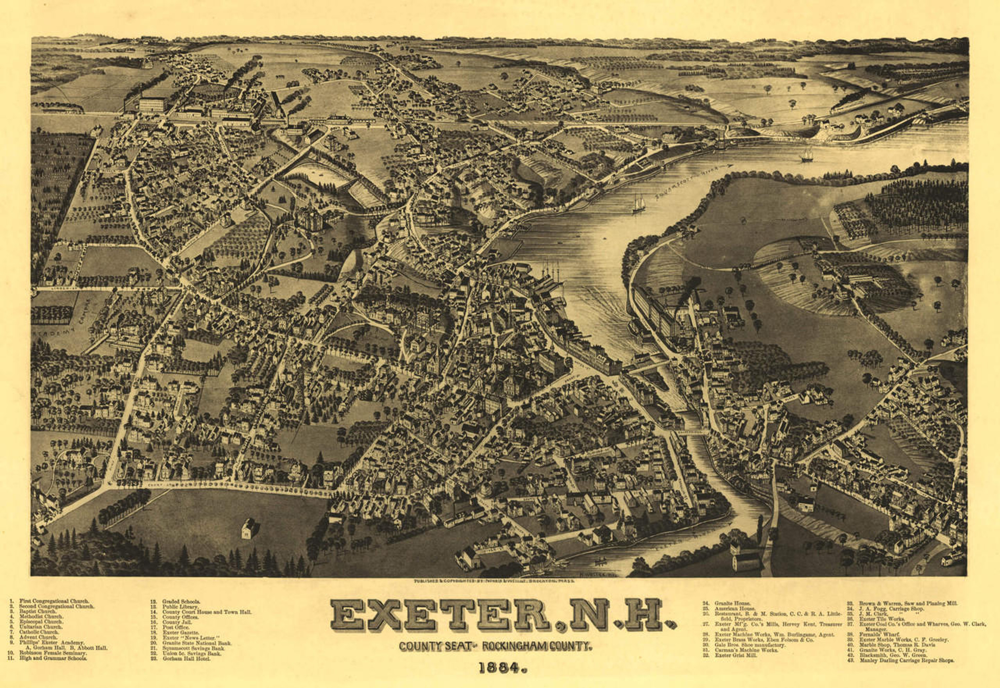

THE HISTORY OF EXETER
Exeter is a cathedral city and the county town of Devon, South West England.
It is situated on the River Exe, approximately 58 km northeast of Plymouth and 105 km southwest of Bristol.
In Roman Britain, Exeter was established as the base of Legio II Augusta under the personal command of Vespasian.
Exeter became a religious centre in the Middle Ages.
Exeter Cathedral, founded in the mid 11th century, became Anglican in the 16th-century English Reformation.
Exeter became an affluent centre for the wool trade, although by the First World War the city was in decline.
After the Second World War, much of the city centre was rebuilt and is now a centre for education, business
and tourism in Devon and Cornwall. It is home to two of the constituent campuses of the University of
Exeter: Streatham and St Luke's.
The site where Exeter Cathedral was constructed was home to Roman buildings. A legionary fortress was constructed
between 50–75 AD. A Roman bathhouse was discovered in 1971.

CATHERDRAL CHURCH OF SAINT PETER
Exeter Cathedral, properly known as the Cathedral Church of
Saint Peter in Exeter, is an Anglican cathedral, and the seat of the Bishop of Exeter, in the city of
Exeter, Devon, in South West England. The present building was complete by about 1400 and has several
notable features, including an early set of misericords, an astronomical clock and the longest
uninterrupted medieval stone vaulted ceiling in the world.
,_Cathedral_Church_of_Saint_Peter_--_2013_--_1401.jpg)